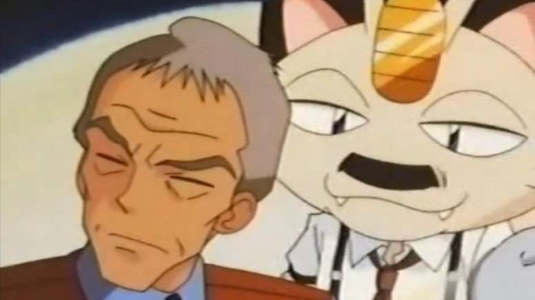

Ao longo dos anos, alguns episódios do anime Pokémon foram considerados impróprios para serem exibidos e tiveram que ser banidos. Quando apenas uma cena é classificada como imprópria, ela é cortada ou modificada. Porém, quando há vários momentos identificadas como problemáticos em um determinado episódio, ele é banido.
Entre esses episódios, houve censuras devido a estereótipos que pudessem ofender uma determinada etnia, religião ou cultura. Já outros não foram ao ar por conta de serem irrelevantes (fillers) ou por respeito a desastres naturais ou catástrofes acontecidos no Japão ou nos EUA. Confira quais são os episódios e por que foram banidos:
No famoso episódio em que James aparece com seios, Ash, Brock e Misty curtem um descanso da jornada Pokémon em uma cidade litorânea. Misty decide participar de um concurso de beleza usando biquínis e se surpreende quando encontra Jessie e James participando do concurso também. Em meio a surpresa, Misty pergunta: "James! Você não é um menino?!" e ele responde: "Que importa? Já que estou linda!". Em outro momento, os seios falsos são inflados até dobrarem de tamanho. O episódio foi banido nos EUA por apresentar cenas exibicionistas e "supostamente estar associado a homossexualidade".
Neste episódio, Ash, Misty e Brock chegam na Zona do Safari Pokémon e, ao se aventurarem pelo local, encontram um senhor que os manda calar a boca. Não bastasse a falta de educação o homem ainda aponta uma arma para os três e pergunta: "Vocês querem levar um tiro?". Além disso, eles descobrem que o velho é o responsável pelo local e chega a ameaçá-los mais uma vez com a arma. Como se não fosse o bastante, a Equipe Rocket também surge ameaçando o vovô com revólveres e o fazendo de refém. A cereja do bolo é quando Meowth surge em determinada cena com um bigode parecido com o de Hitler, fazendo clara alusão ao ditador alemão.
O episódio foi banido por ser considerado totalmente irresponsável no tratamento de armas e da violência, por isso nem chegou a ser dublado para o inglês. Ele não foi exibido em nenhum lugar fora da Ásia, já que a maioria das dublagens são baseadas na versão americana. Foi nesse episódio que Ash capturou uma manada de Tauros, sendo este o único episódio banido a contar com um evento principal. Ou seja, o público ocidental nunca descobriu como Ash conquistou seus companheiros Tauros.
Este episódio é o mais famoso dos banidos pela repercussão após a sua primeira exibição no Japão. Quando Ash e Porygon viajam no Cyber Espaço, vários mísseis são atirados contra eles pela Equipe Rocket e Pikachu usa um Choque do Trovão que faz com que vários flashs azuis e vermelhos ficassem piscando freneticamente por alguns segundos. Esse efeito fez com que várias crianças japonesas reclamassem de visão borrada, dores de cabeça, tonturas e enjoos. Algumas até sofreram ataques epilépticos e convulsões. De acordo com as autoridades, em torno de 685 crianças acabaram encaminhadas para hospitais.
No Japão, o episódio foi banido logo após sua 1ª exibição e também virou notícia internacional, inclusive com William Bonner contando sobre o ocorrido no Jornal Nacional, e muitos pais ficaram receosos quando o anime estreou no Brasil. Por conta deste episódio envolvendo o Pokémon Porygon e o que ele causou, suas evoluções Porygon 2 e Porygon Z nunca apareceram no Anime. No Japão, o anime entrou em hiato após os acontecimentos causados por este episódio e foi questionado até mesmo se ele continuaria a ser exibido.
Este episódio estava programado para ser exibido no dia 31 de Dezembro de 1997, entre os episódios 39 e 40, para comemorar o ano novo. Depois do incidente com o episódio 38, este foi cancelado, por isso há apenas seu título original. Não há nenhuma informação sobre a história deste episódio.
Este episódio foi banido com a "justificativa" de que uma cena de um beijo entre um humano e um Pokémon seria inapropriada. Durante a travessia da Caverna de Gelo, Brock fica com febre e, então, um Jynx aparece para cuidar dele. Durante a febre, Brock tem alucinações e pensa que Jynx é uma das Enfermeiras Joy, seu eterno crush (assim como todas as Oficiais Jenny). Iludido, Brock não perde tempo e beija o Pokémon.
O que seria o episódio número 377 é o primeiro que não chegou a ser exibido nem mesmo no Japão. Neste episódio, acontece um terremoto causado pelo Pokémon Whiscash na ilha onde estão Ash e seus amigos. O episódio iria ao ar no Japão no dia 4 de novembro de 2004, mas foi banido porque o terremoto do episódio se assemelha com o Terremoto de Chuetsu de 2004, que ocorreu no Japão no dia 23 de outubro de 2004. Deste modo, não exibir o episódio foi uma demonstração de respeito às vítimas.
Este episódio foi considerado irrelevante para o enredo, pois fazia apenas um compilado dos principais acontecimentos do anime até aquele momento, durante a jornada em Hoenn. Como o episódio era constituído de um conjunto de cenas anteriores, acabou não sendo exibido nos Estados Unidos e, consequentemente, nos outros países do ocidente.
Outro episódio considerado irrelevante pelos EUA, por apenas reviver a história de Ash, Dawn e Brock até aquele momento em suas jornadas por Sinnoh. Por isso, o episódio não apresentava uma história original e foi removido na cronologia ocidental.
Assim como o episódio 516, este também não foi ao ar no ocidente por ser considerado irrelevante, tendo apenas cenas de acontecimentos já ocorridos até o determinado momento no anime.
Este foi mais um episódio que não chegou a ser exibido sequer no Japão. Este especial seria o primeiro da saga Preto & Branco. Giovanni chega em Unova para concluir seu plano que estava ocorrendo já há vários episódios. Para atrapalhar a Equipe Rocket, a Equipe Plasma chega para travar uma luta épica entre as duas equipes pelo Meteoro especial, que envolve a parcial destruição da cidade de Castelia. O especial também marcaria a aparição de Looker, membro da Polícia Internacional.
Com todo esse enredo prestes a acontecer no anime, uma semana antes da exibição do episódio aconteceu um grande desastre no Japão. No dia 11 de março de 2011, o país oriental enfrentou terremoto, tsunami e o desastre nuclear da usina de Fukushima. Frente às catástrofes, a exibição do episódio foi cancelada em respeito às vítimas. Durante um bom tempo acreditava-se que este episódio seria exibido tempos mais tardes, mas a hipótese já foi descartada. Tudo o que se sabe sobre este episódio pode ser visto na prévia exibida na semana anterior àquela data.
Este episódio foi censurado apenas na versão ocidental do anime, em virtude de um momento em que Ash faz uma pintura facial escura para imitar a aparência de Passimian. No entanto, essa pintura foi associada ao Blackface, um esterótipo racial pejorativo dos afro-americanos nos Estados Unidos. Para evitar qualquer tipo de associação indesejada para a Pokémon Company, o episódio foi banido. Consequentemente, o episódio também não foi exibido no Brasil.